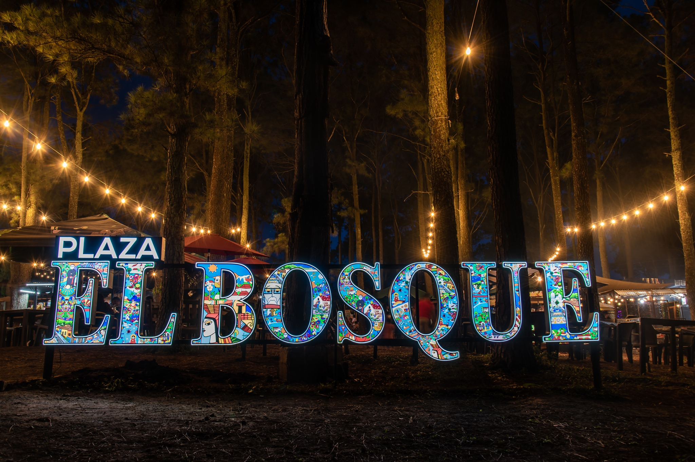
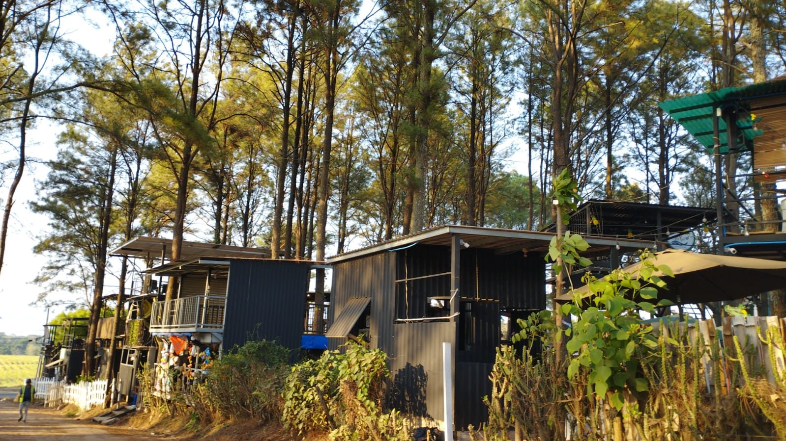
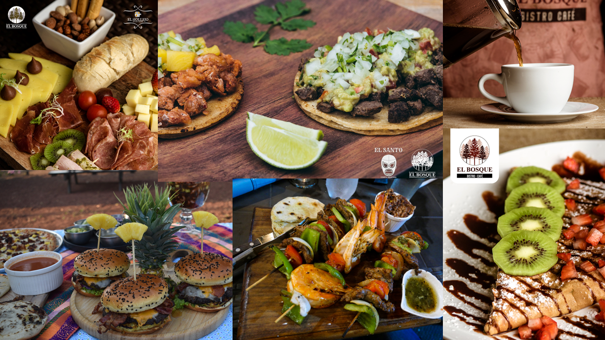
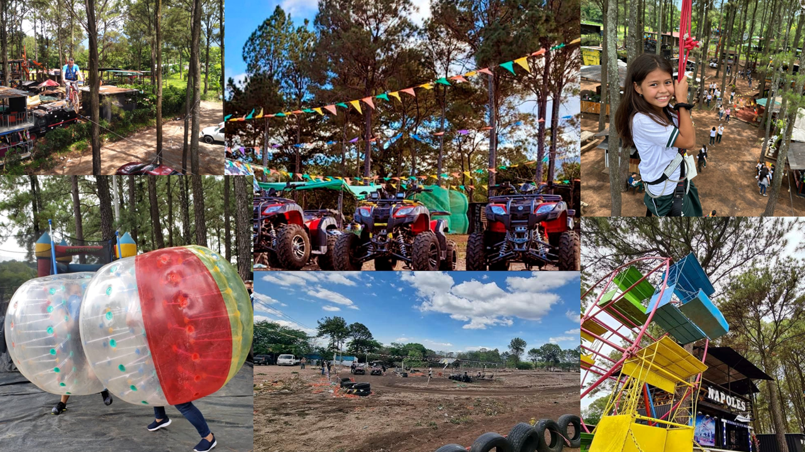
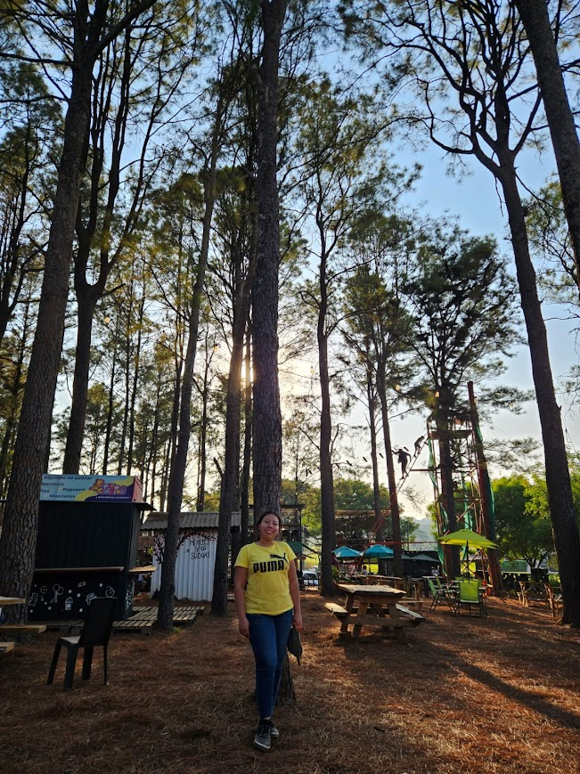

Plaza El Bosque
Ahuachapán


Plaza El Bosque, tal como lo dice su nombre es un sitio con temática arborizada, ubicado en el km 89 de la carretera Panamericana en Turín, Ahuachapán, los juegos mecánicos, música, comida y deportes extremos se encuentran en un mismo lugar. Se encuentra ubicado a una hora y media de San Salvador, sin embargo hay turistas que viajan cientos de kilómetros para disfrutar de la vida nocturna.
Lo Esencial
Tipo de lugar: plaza comercial y recreativa.
Ambiente: natural, familiar y tranquilo.
Ideal para: familias, parejas y viajeros de la Ruta de Las Flores.
Ubicación y Accesos
Ubicación: Ahuachapán, zona occidente.
Cómo llegar: por Carretera Internacional hacia Ahuachapán en el km 89.
Clima: fresco con brisa entre pinos.
Servicios y Comodidades
Opciones gastronómicas: locales variados con comida rápida y antojitos.
Horario general: todos los días de 7:00 am a 10:00 pm.
Galería
¡El lugar perfecto para compartir en familia rodeado de pinos!

Variedad Gastronómica
Plaza El Bosque te espera con variada gastronomía, es el lugar perfecto para compartir en familia rodeado de frondosos pinos.

Diversión sin límites
Pista Xtreme Adventure en cuatrimoto.
Adrenalina en el Paintball.
Circuito de bicicletas aéreas.
Inflables y carrusel para los peques.

Conecta con la naturaleza
Es un hermoso lugar con un clima agradable, perfecto para sacar tus mejores fotos rodeada de frondosos pinos y probar un delicioso café.